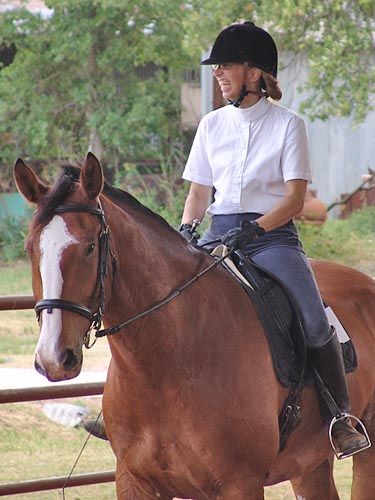
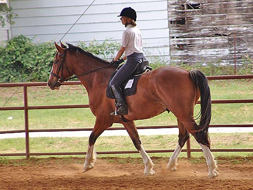
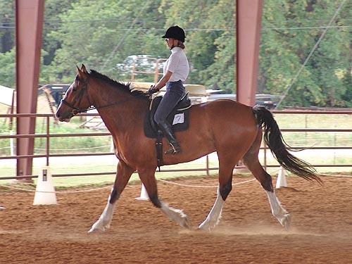

Kanuk - Dressage
Show We went to a schooling show at Fieldstone.
I was nervous because it would be our
first time in a covered arena, but not so
nervous that I didn't sleep ok the night
before.
I showed him the schooling area and the
ring, and lunged him a bit before
preparing to get on. No spooks and he
was so calm on the lunge that it was
clear he was fine with the show grounds.
My trainer was out for warm up, which
was a huge plus. We warmed up better
than we showed, but he was really nice
in the ring. I still had to deal with my nerves, and
couldn't remember everything we'd worked
on in the warm up.
For the two classes we got a 1st and 3rd,
with scores of 69% and 68.5%.
Very exciting, of course.
Outside of the ring, I was pleased to
have the courage to ask for, and
get a nice canter in the warm up ring.
Not too soon, but we'll be needing
that canter for training level and above.

Relaxed enough to laugh at someone's
comment.
Kanuk, of course, was all seriousness.
More relaxed before we went in the
ring.
Checking out the judge's stand before
we entered.

They must have blown the whistle,
because here were a bit more tense.
Our halts were a little late, but
fairly square.
He was better at staying pretty straight
than doing the bending stuff.
I tried to keep my shoulders back
more after the comments from my trainer.
Some bend, but we need to get more.
We had a good walk.
His stretch is coming along nicely.
His trot was forward, but again, we
needed more bend.
Nice movement. We just need to get
through like we were in the warm up and work on that bend.
When I'd think to ask him to soften,
it would happen. So much to think about when we're in the ring and there's
no trainer giving advice.

Pushing him on. Hollow here, but in
training we do better, so we'll get there.
My trainer said Kaunk seemed happy
to be at the show. He looked at everything that he could, but she said
that he really just looked interested, not worried.